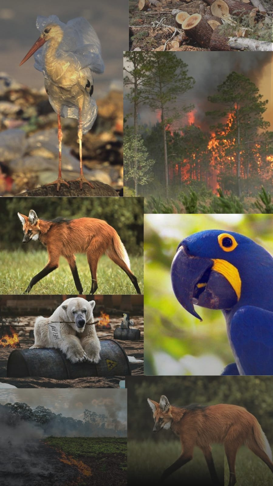
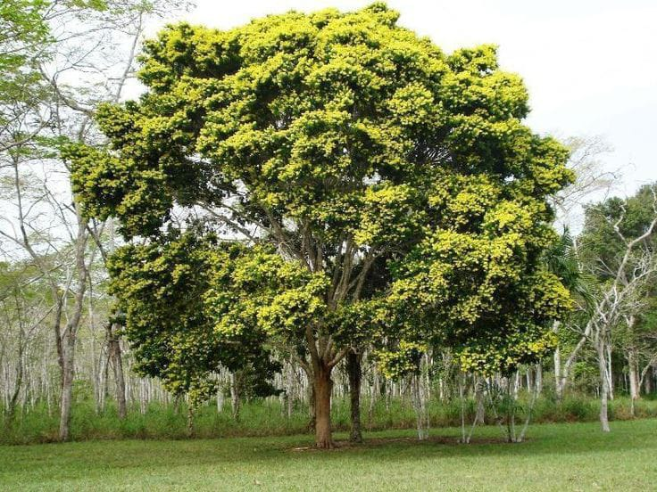
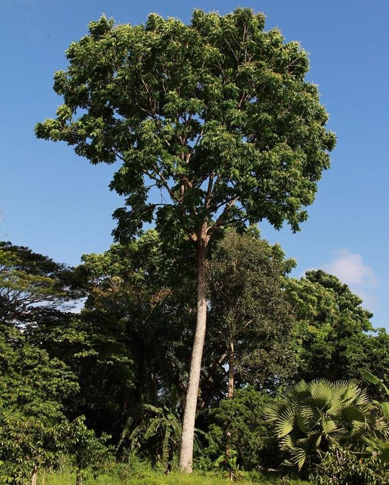
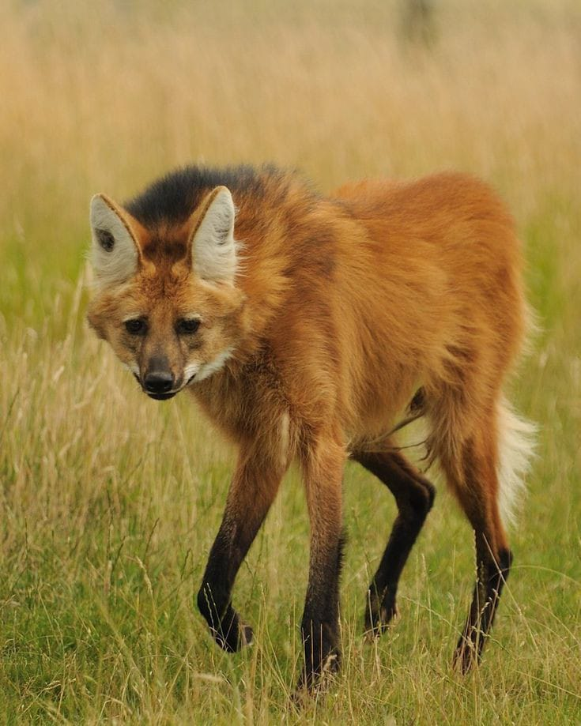
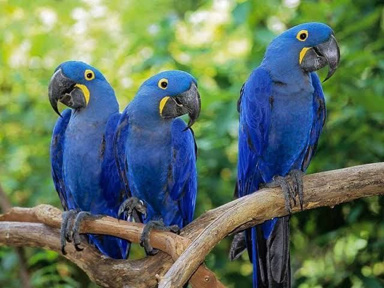

A vida terrestre também enfrenta desafios, especialmente devido à influência humana.
A 15ª ODS (Objetivo de Desenvolvimento Sustentável) da ONU é "Vida Terrestre". Este objetivo tem como
desafio principal a proteção e conservação dos ecossistemas terrestres, a promoção da gestão sustentável
das florestas, o combate à desertificação, a preservação da biodiversidade e a redução da perda de habitat.
Para alcançar esse objetivo, é necessário enfrentar desafios como:
Desmatamento
Exploração insustentável dos recursos naturais
Poluição do solo e dos oceanos
Mudanças climáticas urbanização descontrolada
Perda de habitat
É fundamental promover a conscientização sobre a importância da vida terrestre e adotar medidas efetivas para sua preservação.
￬ VEJA ABAIXO MAIS SOBRE DESMATAMENTO E EXTINÇÃO DE ESPÉCIES ￬

DESMATAMENTO
O desmatamento é um dos desafios enfrentados pela 15ª ODS, que busca proteger
a vida terrestre. O desmatamento indiscriminado tem causado a perda de habitats
naturais, levando à extinção de espécies e à degradação dos ecossistemas.
Além disso,
contribui para as mudanças climáticas, já que as florestas são importantes na absorção
de dióxido de carbono. Para cumprir essa meta, é necessário implementar políticas
eficazes de conservação e manejo sustentável das florestas, promovendo a reflorestação
e a adoção de práticas agrícolas sustentáveis.
Também é fundamental combater a
exploraçãoilegal de madeira e o avanço da fronteira agrícola sobre áreas protegidas.
A preservação das florestas é essencial para garantir a biodiversidade, a qualidade do ar
e a sustentabilidade do planeta.
EXTINÇÃO DE ESPÉCIES
A extinção de animais é um fenômeno preocupante que afeta a biodiversidade
e o equilíbrio dos ecossistemas. Ao longo dos anos, várias espécies têm sido
perdidas devido a fatores como destruição de habitats, caça ilegal, poluição
e mudanças climáticas, esses fatores dificultam o desenvolvimento da 15°ODS,
o que acaba se tornando um desafio.
Cada animal extinto representa uma perda
irreparável, pois cada espécie desempenha um papel único no ecossistema em que
vive. Além disso, a extinção de animais pode ter impactos negativos para os
seres humanos, como a perda de recursos naturais e serviços ecossistêmicos.
É essencial tomar medidas urgentes para proteger e conservar as espécies em
risco, por meio da criação de áreas protegidas, implementação de leis mais
rigorosas e promoção da educação ambiental. A preservação da vida selvagem
é fundamental para garantir um planeta saudável e sustentável para as
gerações futuras.
ESPÉCIES QUE ESTÃO EM EXTINÇÃO⬇

Pau-Brasil
Uma das espécies mais conhecidas e presentes nos livros de história, que inclusive carrega o nome do
país, já figura na lista crítica de extinção há algum tempo, mais precisamente desde 2004. Muito
aproveitado para a retirada de um corante vermelho utilizado na indústria têxtil, o pau-brasil sofreu
o auge da exploração no século XVI, ainda pelos portugueses. A espécie nunca conseguiu se recuperar e
hoje possui muito pouco ainda de área natural

Mogno
O mogno é uma espécie tradicional da região Amazônica, principalmente no estado do Pará. É considerada
“madeira de lei”, uma categoria de troncos fortes e resistentes muito procurada para a produção de móveis
nobres e de custo elevado. Essa utilização é um dos principais motivos para a exploração e o
desmatamento desenfreado do mogno que resultou na sua colocação na lista de risco.

Lobo-Guará
O lobo-guará é um animal que se encontra na lista dos animais com risco vulnerável de extinção e
tem como habitat os biomas do Cerrado e do Pampa, neste último a situação é mais grave.
A causa mais comum para a redução desta espécie está relacionada ao desmatamento das vegetações.
Estima-se que, nos Pampas, atualmente exista uma população média de apenas 50 exemplares.

Arara-Azul-de-Lear
A arara-azul-de-lear é uma espécie brasileira que se encontra na
lista dos animais em extinção na categoria "em perigo", principalmente como consequência do tráfico de animais
e destruição do seu habitat, o bioma da Caatinga, especialmente o interior da Bahia.
As espécies em extinção são um alerta para a fragilidade da biodiversidade do nosso planeta.
Cada vez mais animais e plantas estão ameaçados de desaparecerem para sempre. É nossa responsabilidade agir agora para protegê-los.
Se você se preocupa com o futuro da vida selvagem e deseja fazer a diferença, participe do nosso formulário
sobre conservação de espécies em extinção. Compartilhe suas ideias, conhecimentos e descubra como você pode
contribuir para preservar esses seres incríveis. Juntos, podemos criar um impacto positivo e garantir um futuro
sustentável para todas as formas de vida.
Preencha o formulário agora e faça parte dessa importante missão de preservação!